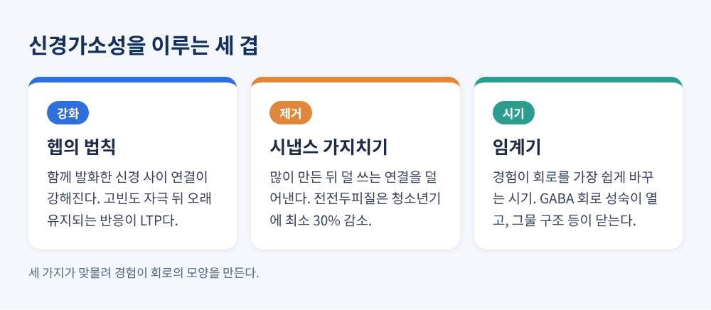
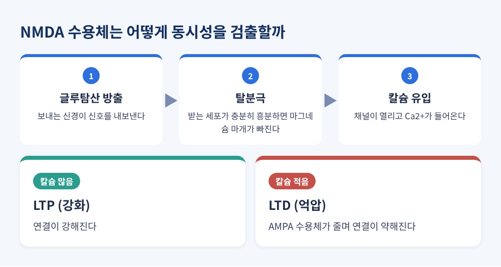
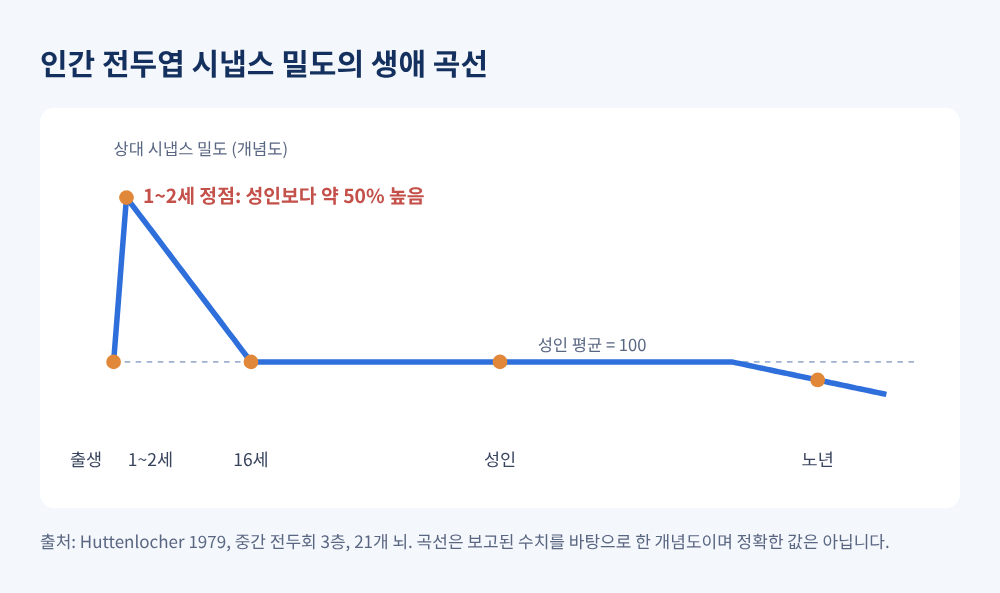
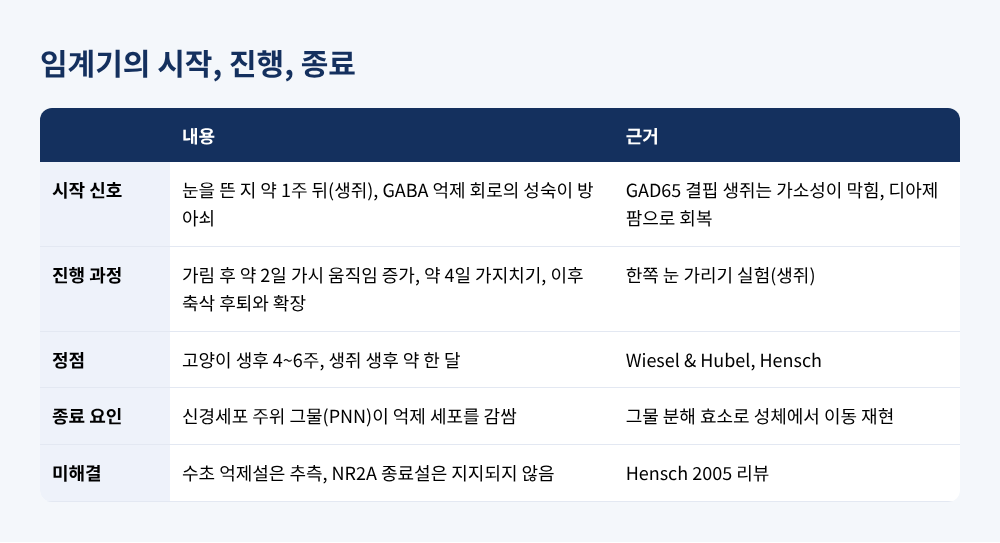
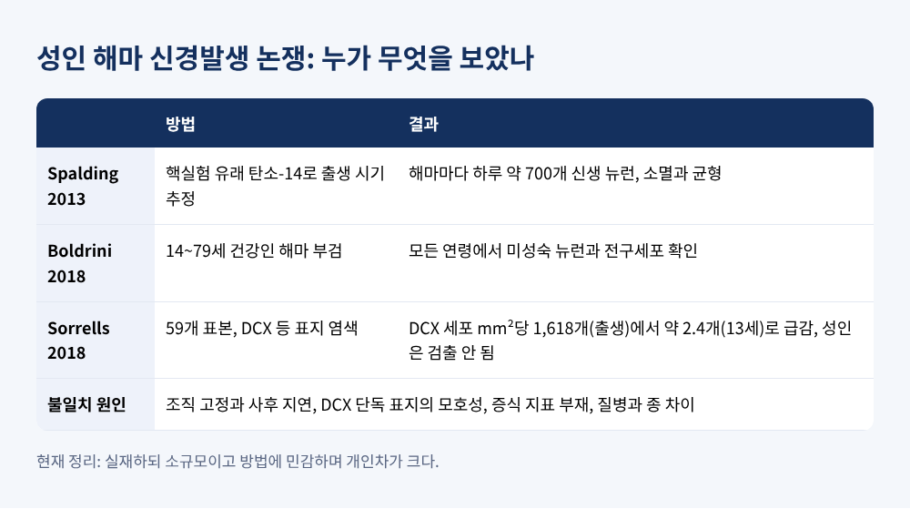

오늘은 신경가소성의 원리에 대해 이야기해 보려 합니다.
뇌가 경험에 따라 연결을 강화하고, 덜어내고, 새로 짜는 방식을 살펴봅니다.
시냅스 가지치기, 임계기, 헵의 법칙, 그리고 아직 결론이 나지 않은 성인 신경발생 논쟁까지 차례로 다루겠습니다.
의학적 조언이 아니라 교양 과학으로 읽어 주시길 바랍니다.
신경가소성의 가장 작은 단위는 시냅스입니다.
헵의 법칙은 이를 한 문장으로 줄입니다. 세포 A가 세포 B의 발화에 자주 참여하면, 둘 사이의 연결은 강해진다는 것입니다.
실험으로 확인된 것은 1973년 Bliss와 Lømo의 연구였습니다.
마취한 토끼의 해마 입력 경로에 100Hz의 고빈도 자극을 주자, 시냅스 반응이 크게 커지고 오래 유지되었습니다. 이를 장기 강화(LTP)라고 부릅니다.
분자 수준의 열쇠는 NMDA 수용체입니다.
이 수용체는 두 가지 조건이 동시에 맞아야 열립니다. 신호를 보내는 쪽에서 글루탐산이 나와야 하고, 받는 쪽 세포가 충분히 탈분극되어 마그네슘 마개가 빠져야 합니다.
조건이 모두 갖춰져 칼슘이 많이 들어오면 연결이 강화됩니다. 탈분극이 약해 칼슘이 조금만 들어오면 오히려 연결이 약해지는 장기 억압(LTD)으로 이어집니다.
타이밍도 중요합니다. 보내는 쪽이 받는 쪽보다 조금 먼저 발화하면 강화되고, 순서가 뒤집히면 약해집니다.
같은 신호라도 인과의 방향에 따라 결과가 갈리는 셈입니다.

흔히 아이의 뇌는 계속 자라기만 한다고 생각합니다. 실제로는 먼저 과하게 만든 뒤 덜어냅니다.
1979년 Huttenlocher는 신생아부터 90세까지 인간 뇌 21개에서 중간 전두회의 시냅스를 세었습니다.
성인(16~72세)의 평균은 mm³당 약 11.05×10⁸개로 안정적이었습니다. 반면 1~2세 아이의 밀도는 이보다 약 50% 높았고, 2세에서 16세 사이에 줄어들었습니다.
이후 리뷰들은 전전두피질에서 청소년기에 최소 30% 정도 감소한다고 정리합니다. 다만 이 수치는 한 영역을 측정한 최소치입니다.
시기도 영역마다 다릅니다. 청각 피질은 청소년 초기, 전전두피질은 청소년 중기에 제거가 뚜렷하고, 속도가 느려질 뿐 성인 초기까지 이어진다는 보고가 있습니다.
회백질 부피가 전두엽과 두정엽에서 10~12세 무렵 정점을 찍고 줄어드는 것도 같은 맥락으로 해석됩니다. 다만 이것을 전부 시냅스 제거로 설명할 수 있는지는 아직 증명되지 않았습니다.
누가 어떻게 깎는지도 조금씩 밝혀지고 있습니다.
2012년 연구는 출생 후 망막에서 시상으로 가는 회로를 정리하는 시기에 미세아교세포가 시냅스 전 말단을 삼키는 것을 보였습니다. 이 포식은 신경 활동에 의존했고, 보체 단백질 C3와 수용체 CR3 경로가 필요했습니다. 이 경로를 막으면 회로 연결에 오래가는 결함이 남았습니다.
많이 쓰인 연결은 남고 덜 쓰인 연결은 청소 대상이 된다는 그림입니다.
가지치기를 나쁜 일로 볼 필요는 없습니다. 효율을 높이기 위한 조각이기 때문입니다.
성인에서는 혼란한 신호를 줄이고, 자주 쓰는 회로를 선명하게 만드는 일에 가깝습니다.

경험이 뇌를 바꾸는 힘은 평생 일정하지 않습니다. 특히 민감한 시기가 있습니다. 이를 임계기라고 합니다.
고전적인 실험은 Hubel과 Wiesel의 한쪽 눈 가리기입니다.
어린 고양이의 한쪽 눈을 가리면 시각 피질은 가려진 눈에 거의 반응하지 않게 됩니다. 고양이의 임계기는 생후 4~6주에 정점이며, 그때는 단 이틀만 가려도 열린 눈 쪽으로 반응이 쏠렸습니다.
같은 처치를 다 자란 뒤에 해도 이런 변화는 나타나지 않았습니다.
왜 창이 열리고 닫힐까요? 생쥐 연구에서 임계기는 눈을 뜬 지 약 1주 뒤에 시작해 한 달 무렵 정점에 이릅니다.
시작의 방아쇠는 억제성 신경전달물질 GABA 회로의 성숙이었습니다. GABA를 만드는 효소 GAD65가 없는 생쥐는 가소성이 막혔고, 억제를 약물로 되살리면 어느 나이에서든 가소성이 돌아왔습니다.
가림 후 약 2일에 가시(spine)가 활발히 움직이고, 약 4일에 가지치기가 일어난 뒤 축삭이 물러나고 뻗는 순서로 재배선이 진행됩니다.
창이 닫히는 이유로는 신경세포 주위를 둘러싸는 그물 모양 구조(PNN)가 거론됩니다.
이 그물을 분해하는 효소를 쓰면 성체 동물에서도 안구 우세성이 다시 이동했습니다. 반면 수초 억제설은 아직 추측 단계이고, NR2A 수용체가 닫는다는 가설은 뒷받침되지 않았습니다.
결국 어른의 뇌가 굳은 것이 아니라 바뀌는 문턱이 높아졌다고 이해하는 편이 정확합니다. 족제비에서 오래 가리면 성체에서도 변화가 관찰된 것도 이를 거듭 알려 줍니다.

성인에게서 구조 변화를 본 대표 사례가 런던 택시 기사 연구입니다.
2000년 Maguire 팀은 면허를 가진 택시 기사 16명(평균 44세)과 통제 남성 50명의 MRI를 비교했습니다. 택시 기사의 후부 해마는 더 컸고, 전부 해마는 오히려 작았습니다.
우측 후부 해마의 부피는 운전 경력과 양의 상관을 보였습니다(r=0.6).
저자들은 후부 해마가 환경의 공간 지도를 담당하며, 길을 찾는 요구가 높으면 국소적으로 바뀔 수 있다고 해석했습니다.
다만 한 시점의 비교이기에 직업이 뇌를 바꾼 것인지, 원래 그런 사람이 직업을 택한 것인지는 이 연구 하나로 가를 수 없습니다.
가소성에서 가장 뜨거운 논쟁이 이 주제입니다.
해마의 치상회에서 성인에게도 새 뉴런이 만들어지는가 하는 문제입니다.
긍정 쪽에는 2013년 Spalding 팀이 있습니다.
냉전기 핵실험이 높인 대기 중 탄소-14가 세포 DNA에 편입되는 것을 이용해 세포의 출생 시기를 추정했습니다. 그 결과 해마마다 하루 약 700개의 새 뉴런이 생기고, 거의 같은 수가 사라진다고 보았습니다.
2018년 Boldrini 팀도 14~79세 건강한 28명의 해마에서 미성숙 뉴런과 전구세포를 모든 연령에서 발견했습니다.
부정 쪽에는 같은 해 Sorrells 팀의 Nature 논문이 있습니다.
59개의 해마 표본에서 어린 뉴런 표지(DCX)를 가진 세포는 출생 때 mm²당 약 1,618개였다가 1세에 약 293개, 7세에 약 12개, 13세에 약 2.4개로 급감했고, 성인에서는 검출되지 않았습니다.
저자들은 인간의 성인 신경발생이 지속되지 않거나 극히 드물다고 결론지었습니다. 다만 연령당 표본이 하나인 경우가 많았고, 질병과 사인이 변수일 수 있음을 인정했습니다.
왜 이렇게 갈릴까요? 리뷰들은 방법의 차이를 꼽습니다.
조직을 오래 고정하면 DCX 같은 표지가 크게 사라질 수 있고, 부검까지 걸린 시간도 영향을 줍니다. DCX 하나만으로는 새로 태어난 뉴런인지 느리게 성숙하는 뉴런인지 가리기 어렵다는 지적도 있습니다.
사후 3시간 이내의 시료를 쓴 후속 연구는 DCX 양성 세포를 훨씬 많이 찾았습니다.
현재는 있느냐보다 얼마나 되느냐의 문제로 옮겨 가는 분위기입니다.
한 리뷰는 성인 신경발생을 실재하지만 소규모이고, 방법에 민감하며, 개인차가 크다고 요약합니다. 인간에서 어떤 기능을 하는지는 입증되지 않았고, 설치류와 같은 기대를 걸기는 어렵다는 견해도 있습니다.

정리하면 이렇습니다.
신경가소성은 하나의 현상이 아니라 세 겹입니다. 함께 쓰인 연결을 강화하는 헵의 규칙, 쓰이지 않는 연결을 덜어내는 가지치기, 그 변화가 가장 쉽게 일어나는 시기를 정하는 임계기입니다.
"뇌는 쓰는 방향으로 깎이고 이어진다."
어른의 뇌가 얼마나 달라질 수 있는지를 묻는다면, 대답은 변할 수 있으나 어릴 때만큼 쉽지는 않다는 정도가 현재까지 확인된 전부입니다.
그 한계를 인정하는 것에서 이 분야의 이야기는 오히려 흥미로워집니다.